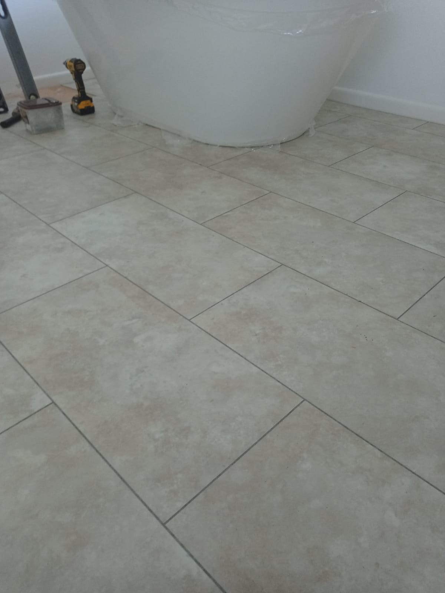
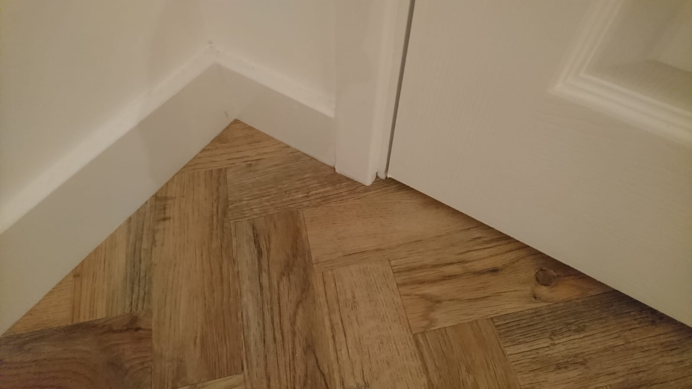
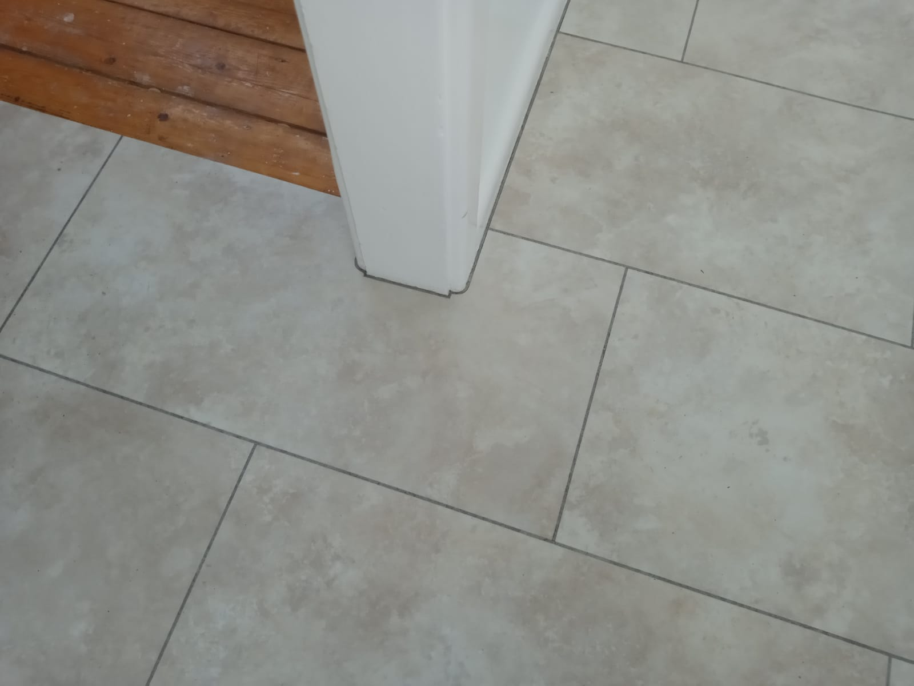

Examples of flooring projects including LVT installations, wood-effect finishes and detailed edge work.
Each floor is fitted to give a durable, practical finish with a clean and professional look.
Click on images to enlarge

LVT Flooring InstallationA hard-wearing and low-maintenance flooring option, ideal for creating a smart finish in busy living spaces.Wood-Effect LVT FlooringA practical flooring choice that gives the natural look of wood with the added durability and easy care of LVT.

Wood-Effect Finish DetailClose-up view showing the texture, grain effect, and quality finish of the fitted LVT flooring.

Flooring Edge DetailCarefully finished edge work and clean transitions for a neat, professional result that completes the installation.